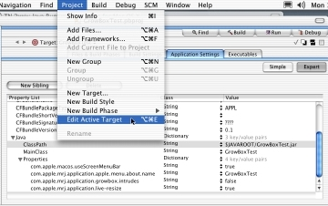

|
|
This Technote describes the various Macintosh-specific runtime properties that can be given to a Java application running on Mac OS X. The properties vary in function from feeding required information to a packaged '.app' Java application wrapper, to making a Java application more Mac-like. Various methods of specifying these properties to a given application are also discussed.
The information in this Technote applies to Java development on Mac OS X 10.1.3 or later, with Java 1.3.1 Update 1, and the December 2002 Developer Tools versions of Project Builder or MRJAppBuilder.
[Nov 14 2002]
|
Java Application Properties for Mac OS X
Java applications on Mac OS X can be supplemented with a number of exclusive runtime properties to enhance their user experience. These properties can be specified via command-line, or, in the case of a packaged '.app' Java application, they are typically specified in one of two files: MRJApp.properties, and Info.plist.
The properties in question are described in the tables below. The "Default" column in the tables represents the default values that the runtime assumes if no value is specified by you when packaging your application. They can be grouped into three main categories: required, graphics, and Macintosh properties.
Back to top
Required Application Properties
The properties listed in Table 1 need to be present and legally defined in order for a '.app' Java application to launch properly. They are needed to resolve the application's main class and locate all of your application's required libraries. If not present, or defined with improper values, the Java runtime will likely reply with a number of errors on launch.
Please note that these properties are written for you by default if your application is created in ProjectBuilder. If you choose not to use Project Builder, you must define the properties yourself (see Setting Application Properties). These properties are not necessary if you are launching your application using the command-line java executable.
|
Table 1. Required application properties.
Property |
Default |
Function |
com.apple.mrj.application.main |
none |
Specify the fully-qualified class name of the class containing the application's main() method. |
com.apple.mrj.application.classpath |
none |
Specify file system paths to all required codebases (directories and/or JAR files). |
|
|
Note: See Table 5 for dictionary equivalents of these properties using Project Builder. |
|
Back to top
Application Launch Properties
The properties listed in Table 2 allow developers to apply traditional command-line startup properties to Java applications on Mac OS X.
|
Table 2. Java launch properties for Mac OS X
Property |
Default |
Function |
com.apple.mrj.application.parameters |
none |
Space-separated list of arguments which are parsed to build the String[] passed to main |
com.apple.mrj.application.workingdirectory |
none |
Sets the current working directory for the application. |
com.apple.mrj.application.vm.options |
none |
Space-separated list of options to VM (e.g -Xms2m) |
|
|
Note: See Table 5 for dictionary equivalents of these properties using Project Builder. |
|
Back to top
Graphical Application Properties
Using Hardware Acceleration: Under Java 1.3.1 on Mac OS X 10.2 (Jaguar), Hardware Acceleration for Swing and 2D graphics has been enabled by default. If you are experiencing problems with graphical application performance or stability on Jaguar, try disabling hardware acceleration by setting the com.apple.hwaccel key to false, using one of the methods outlined in this technote. To disable hardware acceleration permanently:
- Log on to http://connect.apple.com
- Download the hwaccel_info_tool
- Open Terminal and type
sudo /usr/local/bin/hwaccel_info_tool (you will be asked for your password)
- Enter the returned string into the
hwaccelexclude.properties file inside /Library/Java/Home/lib and save the file.
For use of hardware acceleration in Mac OS X 10.1.x, please consult the 1.3.1 Update 1 Release Notes for information on enabling hardware acceleration in your Java apps. Any users of 10.1.x are strongly encouraged to download the Java 1.3.1 Update 1 package for that system via Software Update.
Back to top
"Macintosh" Application Properties
The properties listed in Table 4 are are all optional, and provide Mac-like or other general look-and-feel enhancements to your application without any additional code. Properties marked with an asterisk (*) only have effect when using the Aqua look and feel in Swing applications.
|
Table 4. Java Macintosh properties for Mac OS X
Property |
Default |
Function |
com.apple.macos.useScreenMenuBar * |
false |
Puts Swing menus in the Mac OS menu bar, if using the Aqua look and feel. Java applications created with Project Builder will have this set to true |
com.apple.macos.use-file-dialog-packages |
false |
If set to true, causes java.awt.FileDialog to treat application (.app) bundles and installer (.pkg) packages as files instead of folders, and will not allow navigation into them. See Tech Note 2042 for JFileChooser equivalents |
com.apple.macos.smallTabs * |
false |
If set to true, tabs will assume a smaller font size which in effect will shrink the overall size of each tab. The Aqua HI Guidelines dictate that tabs should have two possible sizes |
com.apple.mrj.application.apple.menu.about.name |
none |
If defined, an "About ..." command will be added to the top of the application menu, and can be detected by registering a com.apple.mrj.AboutHandler. Java applications created with Project Builder will have this set to inital name of your project |
com.apple.mrj.application.growbox.intrudes |
true |
Causes resizable window’s grow-box to intrude into AWT/Swing content (if turned off, bottom of window is pushed down 15 pixels). |
com.apple.mrj.application.live-resize |
false |
Enables live resizing of windows. |
|
Back to top
Setting Application Properties
The properties listed in the table above can be implemented in three different ways, depending on the tools you are using and the means in which you wish to deploy the application: using the command-line, or, in the case of a .app packaging, the MRJApp.properties and Info.plist files. For more information on app packaging beyond the following sections, please refer to the Application Packaging section of Inside Mac OS X: System Overview.
Back to top
Command-Line Execution
Mac OS X provides the standard JDK command line tools for developers. Therefore, when launching an unpackaged Java application from the command line, the two required properties listed above in Table 1 should not be used, in favor of the standard command-line specification of the classpath and main class. The other (optional) runtime properties can be applied to a command-line Java application using the -D flag when executing the program:
duke% java -cp lib/MyJar.jar \
-Dcom.apple.mrj.application.growbox.intrudes=false \
-Dcom.apple.macos.useScreenMenuBar=true MySampleApp
|
Note that you can also specify a Dock icon and name for your unpackaged application from the command line, using the format
-Xdock parameter:
duke% java -cp lib/MyJar.jar -Xdock:name="My Groovy Java \
App" -Xdock:icon=myhome/myIcon.icns MySampleApp
|
Note that the name and icon parameters are specified using separate -Xdock directives. This is a change from the original convention, where name and icon were specified with one -Xdock directive and separated by a colon. The new format has been adopted to prevent problems with application names that contain a colon. If a name is not specified, the name of the application's main class will appear as the Application Menu title. If an icon is not specified, the generic Java application icon will appear on the dock. As with a regular Mac OS X application, the desired icon must be a .icns file. Values with spaces can be wrapped in double-quotes, or escaped using a backslash (\), so that they are read properly. Only the first of each value (icon, name) will be read by the VM launcher.
Back to top
'.app' Execution Using Project Builder (Info.plist)
If you are using Project Builder to develop your Java application, a good deal of work is done for you in terms of setting the aforementioned properties, as well as fully generating and packaging the double-clickable '.app' executable for your application.
When you name and start your project in ProjectBuilder, the properties for the application's main class and classpath are automatically generated for you. The classpath property in particular will be continuously updated as you add and remove .class and .jar files from your project. If, however, you change the name of your main class, you will need to change the respective property manually.
When Project Builder packages your Java application into a double-clickable '.app' file, it places the Java runtime properties listed above in an Info.plist file contained within the .app package. This file is parsed and fed into the runtime when the application is launched.
The Info.plist file is standard for Mac OS X applications, and is generated by Project Builder from the project's "Application Settings"; as of Project Builder 1.1, Java application projects should contain a Java dictionary among the list of properties. To add or change runtime properties in Project Builder at design-time:
- Select "Edit Active Target" from the Project Window
- Click the "Application Settings" tab
- Click the "Expert" button
- Click the triangle next to "Java" to expand the Java Properties list
Figure 1 shows the Expert Application Settings pane from Project Builder.

Figure 1. Editing Java runtime properties in Project Builder.
|
As mentioned above, the use of an Info.plist file as of Project Builder 1.1 has provided dictionary replacements for many of the properties above. Those properties, their dictionary counterparts, and alternative means of specifying values are listed below in Table 5 for easy reference.
|
Table 5. Info.plist representation of Java runtime properties
Property |
Dictionary Key |
Format |
com.apple.mrj.application.main |
MainClass |
Same as original (string) |
com.apple.mrj.application.classpath |
ClassPath |
Same as original (colon-separated string), or array of strings |
com.apple.mrj.application.parameters |
Arguments |
Same as original (space-separated string), or array of strings |
com.apple.mrj.application.workingdirectory |
WorkingDirectory |
Same as original (string) |
com.apple.mrj.application.vm.options |
VMOptions |
Same as original (space-separated string), or array of strings |
|
|
Note: If one of your values for the VMOptions or Arguments properties contains a space in it, you should make use of the Array-based values, rather than the space-separated String format. Using the latter will cause the VM to treat spaces between tokens as individual arguments without exception.
|
|
The Info.plist file also makes two other keys available:
Jar: Entered as a string path to the application jar file. Intended as a replacement for using java -jar at the command line.
$JAVAROOT: Entered as a string path to the location of the Java classes inside the application package. If this key is not specified, $JAVAROOT defaults to $APP_PACKAGE/Contents/Resources/Java. Can be used to shorten string definitions for the Jar, ClassPath, Arguments, Properties, WorkingDirectory, and VMOptions keys.
$APP_PACKAGE: Entered as a string path to the location of the '.app' file. Similar to $JAVAROOT in use, and function. Necessary when specifying files outside of the .app package.
Note that $JAVAROOT and $APP_PACKAGE are only expanded by the Java launcher, and are not usable from Java code. Traditional system properties should be used to make this sort of data available to your Java application.
Additionally, the com.apple.macos.useScreenMenuBar property is initialized to true, and the com.apple.mrj.application.apple.menu.about.name property is initialized to the name of your project when using ProjectBuilder. All other properties will need to be added following the above steps.
To edit the runtime properties of an application already built with Project Builder:
- Holding the Control key, click on the application's icon.
- Select "Show Package Contents".
- Open the "Contents" folder.
- Open the Info.plist file in PropertyListEditor, located under
/Developer/Applications, or with a text editor.
Note that Project Builder 10.0 (which shipped with the original release of Mac OS X) created an MRJApp.properties file, which was editable using the Files tab. While use of MRJApp.properties will still work at runtime on Mac OS X 10.1, ProjectBuilder has adopted the Info.plist method for Java projects in order to better comply with Mac OS X application standards.
Please refer to the System Overview documentation for more on using and creating Info.plist files.
Back to top
'.app' Execution Using MRJAppBuilder (MRJApp.properties)
The MRJAppBuilder utility is used to package a pre-built Java application into a '.app' file, allowing it to launch with a double-click. It is provided for developers who are not using Project Builder, but wish to have a Java application that can be launched in a manner similar to other Mac OS X applications. MRJAppBuilder is located in /Developer/Applications.
Unlike Project Builder, MRJAppBuilder has not yet been updated to use the Info.plist file for storing Java runtime properties and still places them inside an MRJApp.properties file. The MRJApp.properties file contains one property per line and is written as plain text. Lines may be commented out, causing them to be ignored at runtime, with a # at the start of the line.
A Java project created in versions of Project Builder prior to 1.1 will still open in version 1.1, and MRJApp.properties can be edited using the Files pane. To edit the runtime properties of a Java application built using MRJApp.properties:
- Holding the Control key, click on the application's icon.
- Select "Show Package Contents".
- Open the "Contents" folder.
- Open the "Resources" folder.
- Open the MRJApp.properties file in a text editor.
Remember that MRJAppBuilder will be updated to use Info.plist-based properties in the future. Applications using MRJApp.properties also have a number of shortcomings which those using Info.plist do not:
- Arguments to main, since they are space-separated, may not contain embedded spaces (Info.plist allows for this by using an array of strings).
- If a MRJApp.properties based Java application package is launched from the command line, additional command line arguments are ignored.
- The
$APP_PACKAGE property is not expanded when used in com.apple.mrj.application.parameters.
Back to top
Summary
This Technical Note has discussed the many runtime properties at a Java developer's disposal on Mac OS X, as well as the three main methods of using them: command-line, Info.plist, and MRJApp.properties. These properties can be edited at design-time using ProjectBuilder or post-build using instructions given above.
Back to top
Downloadables
|

|
Acrobat version of this Note (108K)
|
Download
|
|